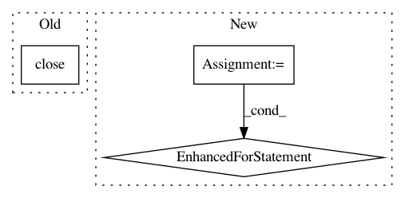

a1a6b7db4b2f751b6f6be9adfb452b200c9a3ee7,examples/titanic/simple_model_training.py,,,#,17
Before Change
model_name="simple_model")
model.close()
After Change
// list contents of output directory
print("contents of output directory:", output_directory)
for item in os.listdir(output_directory):
print("\t", item)
In pattern: SUPERPATTERN
Frequency: 4
Non-data size: 3
Instances
Project Name: uber/ludwig
Commit Name: a1a6b7db4b2f751b6f6be9adfb452b200c9a3ee7
Time: 2020-09-20
Author: jimthompson5802@gmail.com
File Name: examples/titanic/simple_model_training.py
Class Name:
Method Name:
Project Name: OpenNMT/OpenNMT-py
Commit Name: 7b205efea6b504de04311bc55d109cd28d8f3e0c
Time: 2016-12-21
Author: alerer@fb.com
File Name: OpenNMT/preprocess.py
Class Name:
Method Name: makeVocabulary
Project Name: streamlit/streamlit
Commit Name: 16a842fb1701db91333884d0f743a0674f38ddf8
Time: 2019-03-28
Author: tconkling@gmail.com
File Name: lib/streamlit/proxy/Proxy.py
Class Name: Proxy
Method Name: stop
Project Name: tensorlayer/tensorlayer
Commit Name: f2073333b710a340403843763ba60eb1e6699916
Time: 2019-04-11
Author: rundi_wu@pku.edu.cn
File Name: examples/data_process/tutorial_tfrecord2.py
Class Name:
Method Name: